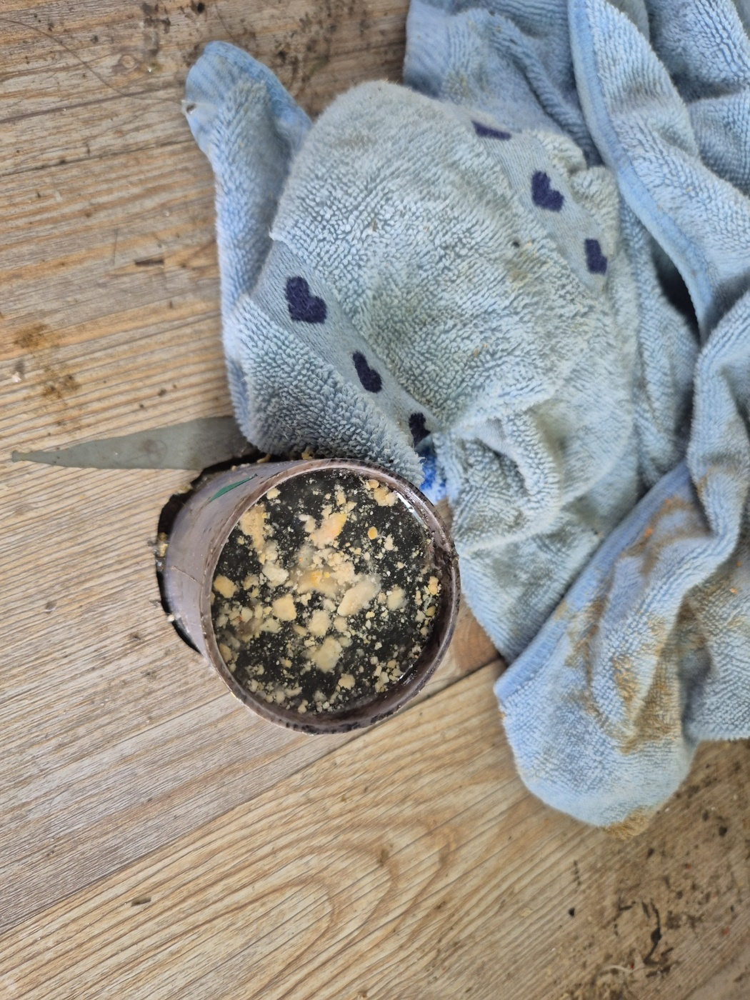
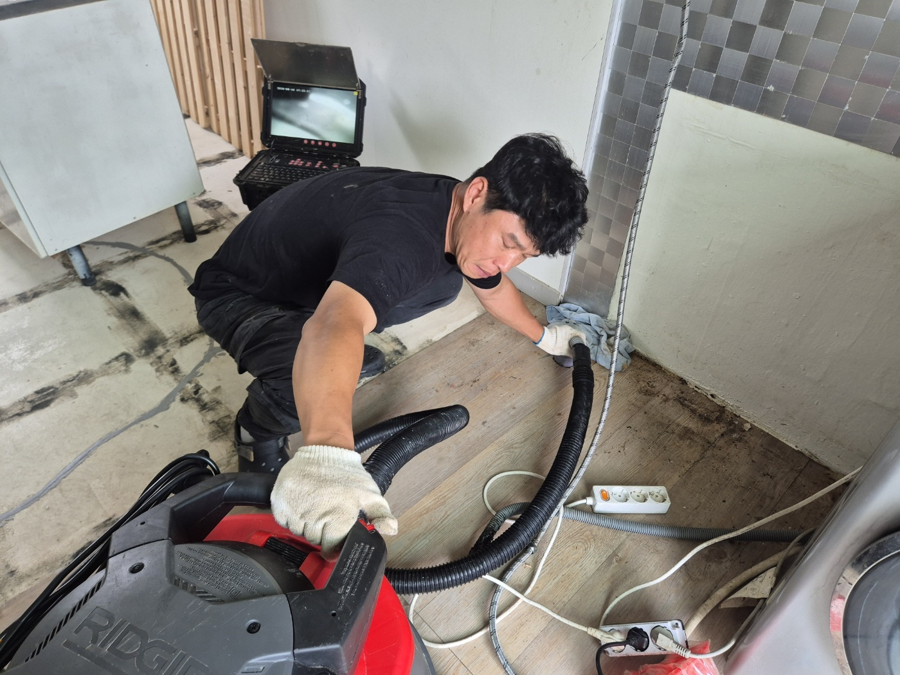
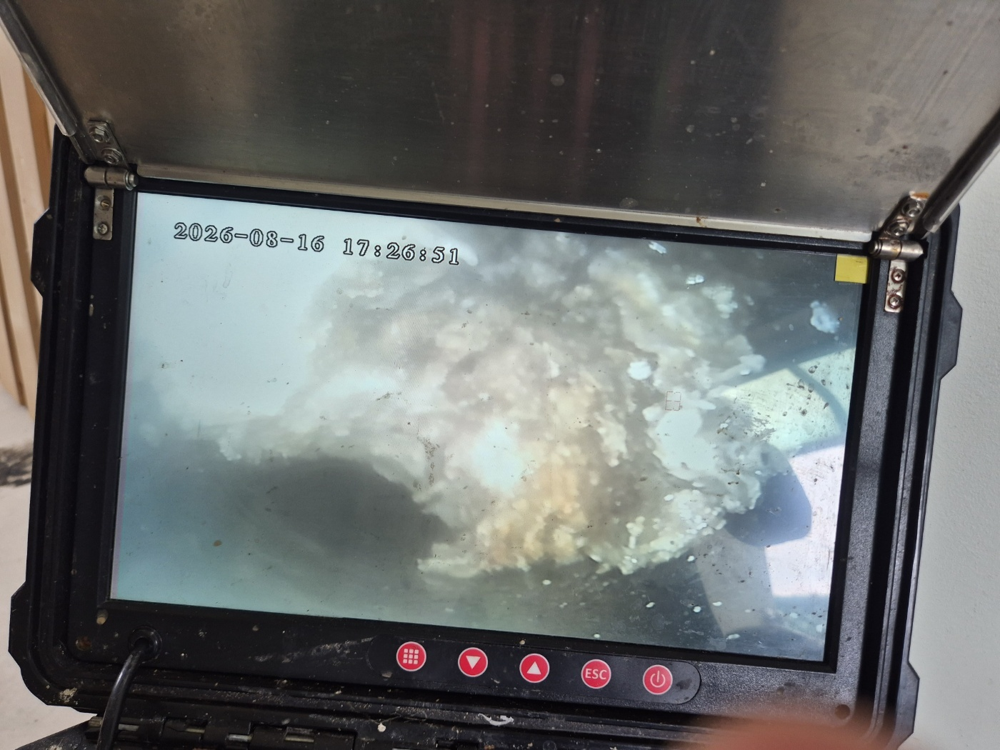
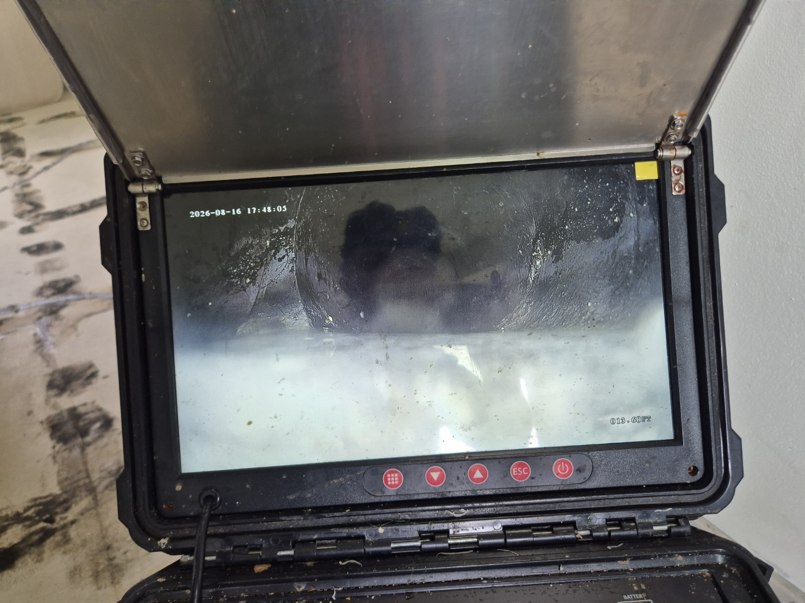
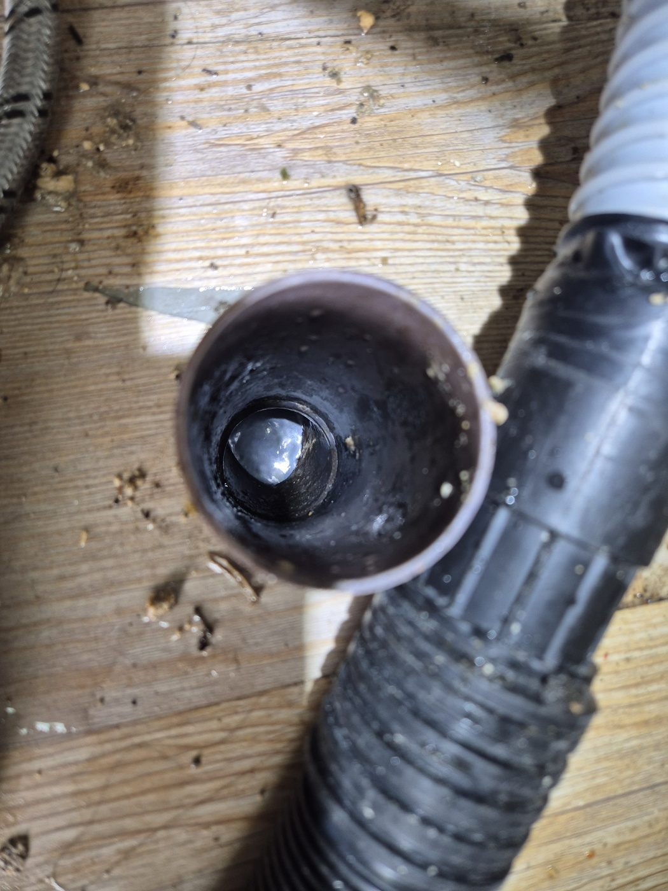

안녕하세요.. 고고고 설비입니다.. 오늘은 안성시 공도에 있는 원룸에서 싱크대 배관막힘 신고를 받고 다녀온 현장입니다. 옆집에서 싱크대를 사용하면 이쪽으로 물이 역류한다고 하셨어요.
바닥 배관 마감을 열어보니 안쪽에 기름때가 딱딱하게 굳어 층층이 쌓여있었습니다.. 여러 세대가 같이 쓰는 배관이라 한쪽에서만 문제가 생겨도 옆집까지 영향을 주는 구조였어요.
고압세척 장비와 내시경 카메라를 함께 준비해서, 낮은 자세로 배관 입구에 호스를 밀어 넣으며 안쪽 상태부터 확인했습니다.

모니터 화면으로 보니 배관 안쪽이 하얗게 굳은 기름 찌꺼기로 거의 꽉 막혀있는 게 보였습니다. 이 정도면 옆집에서 물을 내릴 때마다 역류하는 게 당연한 상태였어요.

고압 호스로 여러 차례 반복 세척을 진행하고 나서 다시 내시경으로 확인해보니, 막혀있던 이물질이 제거되고 배관 안쪽이 훤히 뚫려있는 게 보였습니다.

배관을 원래대로 정리하고 물을 내려서 역류 없이 잘 빠지는 걸 최종 확인했습니다.

여러 세대가 한 배관을 같이 쓰는 원룸이나 다세대 주택은, 한쪽 배관이 막히면 다른 집까지 역류하는 경우가 많아서 초기에 원인 구간을 정확히 찾아 해결하는 게 중요합니다.
고고고 설비는 주택, 아파트, 원룸, 상가, 공장의 생활 하수 오수 배관을 관리해 주는 업체입니다. 고고고 설비에 전화 주시면 친절상담 정확한 진단 확실한 해결로 보답해 드리겠습니다!!